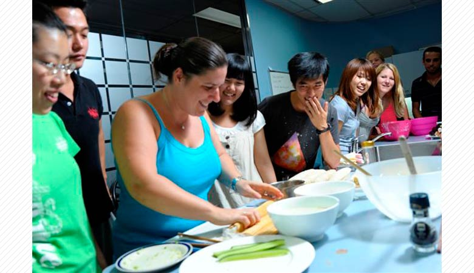
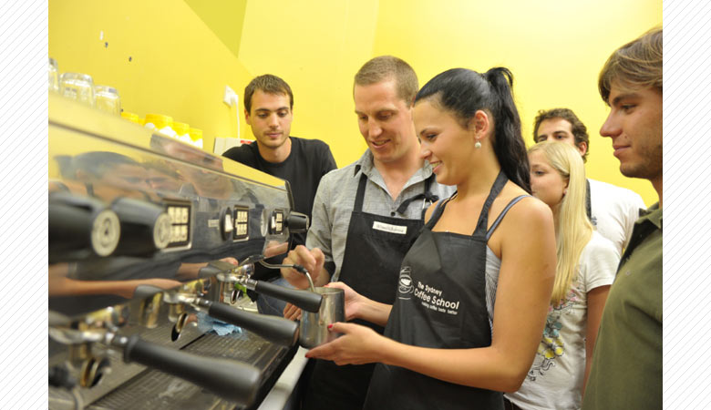

25年以上の伝統校
SELCは1985年創立の、オーストラリアで最も伝統と実績のある語学学校の一つとして知られています。
政府認定校としてNEASに加盟し、優良な学校が加盟するEAにも所属しています。
実力派の講師陣
SELCは個性豊かで実力派の講師が揃っている学校として評価されています。
英語講師としての資格保持者はもちろんのこと、IELTSやケンブリッジ検定の現役試験官が多数在籍しております。
多彩なコースと豊富なレベル
SELCではあらゆる環境を想定し、それぞれに応じたバラエティに富んだコースを取り揃えています。
またレベルも非常に細かく設定されており、自分にぴったりのクラスで心地よく学習することができます。
万全なカウンセリング体制
英語学習やあらゆる面における学生の状況を把握するため、定期的に担任講師によって個別面談が行われます。
担任以外にも、英語学習に関する教育カウンセラーや進学専門のカウンセラーなども在籍しており、
的確なアドバイスができる体制が整っています。

世界トップクラスの設備
SELCでは世界でもあまり類をみない「実践型の英語教育」を行うためのさまざまな学習施設や設備を用意しています。
実際のオフィスを再現したビジネス・イングリッシュ・センター、本格的なエスプレッソマシンがあるカフェ形式の教室、
キッチン付きの教室などその設備は語学学校とは思えないほどです。
理想的なロケーション
シドニーはオペラハウスやハーバーブリッジがある街として知られています。
SELCが位置するのは、シドニー中心地から電車で10分ほどのボンダイ・ジャンクションに学校があります。
理想的なロケーション
世界的にも美しいと言われるボンダイビーチの近くで、シドニーっ子に人気のあるエリアです。
シドニーの都会と自然の広がるリゾートの両方を感じられるまさに絶好のロケーションにSELCはあります！

バリスタ・トレーニングコース 短期間で「接客のプロ」を目指すトレーニング
英語力に自信がない方でも受けられる、シドニーで初めてできた接客英語専門コースです。
カフェやレストランなど接客業で使うコミュニケーション英語と、働く際に必要な知識と技術を習得します。

SELCワーホリパッケージプラン
入学金と学費、教材費がセットになったお得なプラン！4週間から16週間まで4週刻みに料金設定がございます。
長くお申し込みいただければいただくほど、よりお得に！